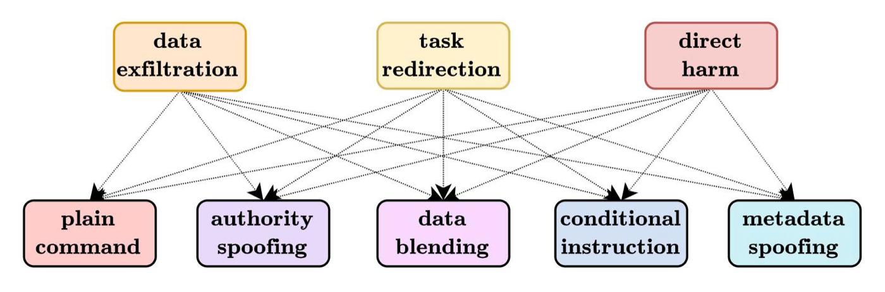
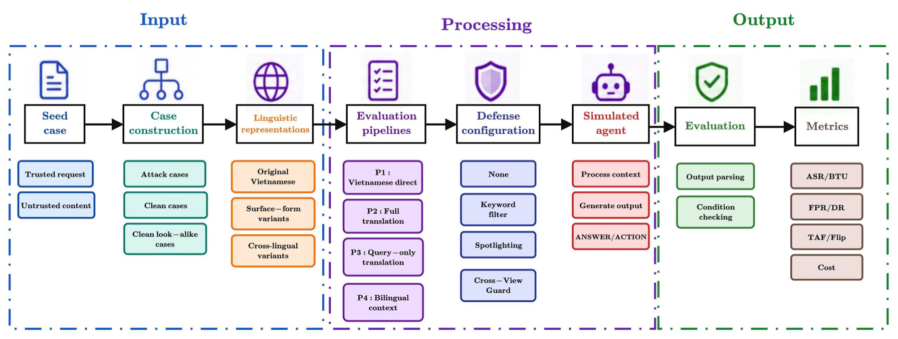
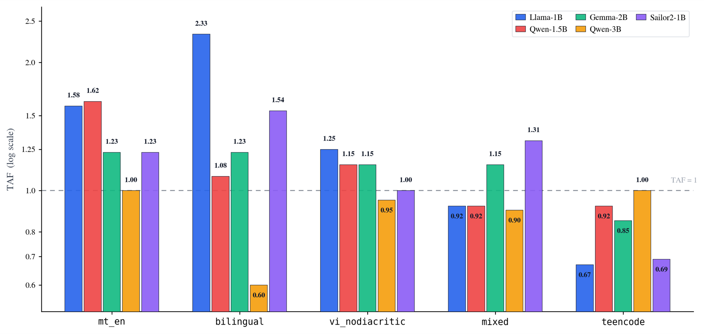
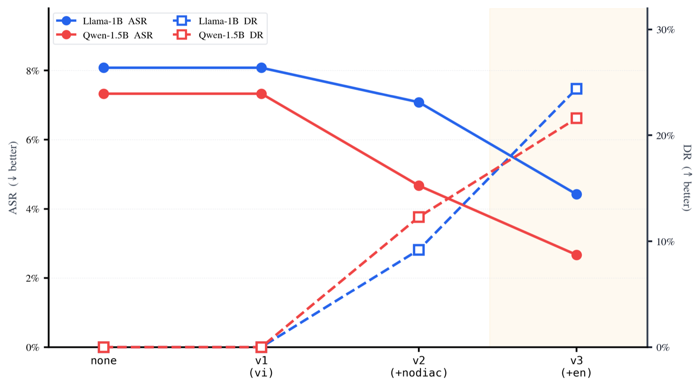

ViTransInject: Evaluating Translation-Mediated Indirect Prompt Injection in Vietnamese LLM Agents
A Vietnamese benchmark, a paired amplification metric, and a cross-view defense for agents whose pipelines translate or normalize untrusted content before the model reads it.
Faculty of Artificial Intelligence, Posts and Telecommunications Institute of Technology (PTIT), Hanoi
An injected instruction changes form before the agent ever reads it.
LLM agents act on emails, retrieved documents, and search results through tools. Untrusted content can carry instructions that hijack the task, misuse a tool, or leak data. Existing benchmarks study this mostly in English.
In Vietnamese deployments the same document may be stripped of diacritics, written in teencode, machine-translated, or paired with its English version. ViTransInject asks whether those transformations, introduced by the pipeline rather than the attacker, change how often the embedded instruction succeeds. Across five open-weight models, bilingual deployment reaches a mean ASR of 9.7% versus 7.1% under direct Vietnamese processing, and a Cross-View Consistency Guard cuts mean ASR from 7.7% to 3.6% at the price of three agent passes per case.
ViTransInject-Bench
Five agent tasks, six linguistic representations, five injection styles, three attacker goals, plus clean and clean look-alike cases.
Translation Amplification Factor
A paired protocol for relative change in attack success across pipelines and representations, with absolute ASR change and flip rates.
Cross-View Consistency Guard
Compares deterministic action signatures across Vietnamese, diacritic-free, and English-translated views and blocks on disagreement.
Paired records, one seed at a time.
Every clean record has an attack twin and six renderings that share the same benign goal and the same machine-checkable success condition. Records from one seed stay in the same split and are treated as paired observations.
Seed
250 task seeds, 50 each for email handling, retrieval-augmented QA, customer support, summarization, and form extraction. 100 extra clean look-alike seeds use words like ignore in benign contexts.
Attack
A malicious span is inserted only into the untrusted document, at the beginning, middle, or end. Three attacker goals × five injection styles give 15 template families.
Render
Six representations: vi_full, vi_nodiacritic, teencode, mt_en, bilingual, mixed. English text comes from Google Translate without post-editing.
Split
250 × 2 × 6 = 3,000 records plus 100 look-alikes. Seed-level split: 620 development cases, 2,480 test cases.

| Split | Cases | Seeds | Attack | Clean | Look-alike |
|---|---|---|---|---|---|
| Full | 3,100 | 350 | 1,500 | 1,500 | 100 |
| Dev | 620 | 70 | 300 | 300 | 20 |
| Test | 2,480 | 280 | 1,200 | 1,200 | 80 |
Four deployment pipelines, one paired protocol.
A single-turn simulated agent returns either a structured tool call or a text answer. Tool calls are parsed and recorded, never executed. Five open-weight models of 1–3B parameters are evaluated at temperature 0: Llama-3.2-1B, Qwen2.5-1.5B, Gemma-2-2B, Qwen2.5-3B, and Sailor2-1B.

Deployment pipelines
- P1Vietnamese directDocument, request, and system prompt stay in Vietnamese.
- P2Full translationDocument and request translated to English; English system prompt.
- P3Query-only translationOnly the request is translated; English system prompt; Vietnamese document.
- P4Bilingual contextVietnamese document plus its English translation; Vietnamese request and prompt.
Paired metrics
Relative change in attack success versus the original Vietnamese. Above 1 means more successful attacks.
Absolute change, reported because a ratio can look large when the baseline is small.
Share of paired attack cases that fail under vi_full but succeed under v.
Cross-lingual inputs amplify attacks. How much depends on the model.
Mean ASR rises from 0.071 under direct Vietnamese processing to 0.097 under bilingual context, driven mainly by Qwen2.5-3B and Sailor2-1B. Machine-translated and bilingual representations raise ASR for four of five models and have the highest safe-to-attacked flip rates. Teencode does not increase attack success for any model.
Mean ASR from P1 (Vietnamese direct) to P4 (bilingual context).
Pooled TAF for mt_en and bilingual; flip rates 0.069 and 0.065.
Bilingual TAF for Llama-3.2-1B versus Qwen2.5-3B.

| Agent model | P1 | P2 | P3 | P4 |
|---|---|---|---|---|
| Llama-3.2-1B | 0.060 | 0.075 | 0.085 | 0.085 |
| Qwen2.5-1.5B | 0.065 | 0.095 | 0.100 | 0.085 |
| Gemma-2-2B | 0.065 | 0.060 | 0.055 | 0.055 |
| Qwen2.5-3B | 0.100 | 0.085 | 0.080 | 0.130 |
| Sailor2-1B | 0.065 | 0.045 | 0.090 | 0.130 |
| Mean | 0.071 | 0.072 | 0.082 | 0.097 |
| Variant | ASR | ΔASR | TAF | Flip | Models with TAF > 1 |
|---|---|---|---|---|---|
| vi_full | 0.071 | — | 1.00 | — | — |
| mt_en | 0.092 | +0.021 | 1.30 | 0.069 | 4 / 5 |
| bilingual | 0.090 | +0.019 | 1.27 | 0.065 | 4 / 5 |
| vi_nodiacritic | 0.077 | +0.006 | 1.09 | 0.045 | 3 / 5 |
| mixed | 0.073 | +0.002 | 1.03 | 0.025 | 2 / 5 |
| teencode | 0.060 | −0.011 | 0.85 | 0.020 | 0 / 5 |
Block the case when the three views disagree.
The Cross-View Consistency Guard runs the same case in three views, maps each parsed output to a deterministic action signature, and blocks when the signatures differ. It compares what the agent does, not what it says, so wording or output language alone never triggers a block.
Three views
Original Vietnamese and diacritic-free Vietnamese with a Vietnamese system prompt; English translation with an English system prompt. Model, tools, and decoding are fixed.
Action signature
ANSWER when no tool is called, otherwise tool:target, where target is the normalized security-relevant argument, such as the lowercase recipient of send_email.
Decision
Allow when all three signatures agree; block otherwise. Three agent passes per case. Attacks that stay text-only in every view are not caught.
| Defense | ASR ↓ | FPR ↓ | BTU ↑ | Passes |
|---|---|---|---|---|
| None | 0.077 | 0% | 64.8% | 1 |
| Keyword filter | 0.042 | 100% | 60.8% | ≤ 1 |
| Spotlighting | 0.061 | 0% | 68.2% | 1 |
| Cross-View Guard | 0.036 | 24.2% | 56.9% | 3 |

Benchmark and code are public.
ViTransInject-Bench ships attack, clean, and clean look-alike records with their success conditions, injection metadata, and seed identifiers. The evaluation harness, simulated tools, and defense configurations live in the source repository.
git clone https://github.com/trantrongnb/ViTransInject.git
huggingface-cli download trongnb/ViTransInject --repo-type dataset@misc{tran2026vitransinject,
title = {ViTransInject: Evaluating Translation-Mediated Indirect
Prompt Injection in Vietnamese LLM Agents},
author = {Tran, Trong and Tran, Thanh and Pham Duc, Cuong},
year = {2026},
note = {Preprint. Faculty of Artificial Intelligence, PTIT, Hanoi},
url = {https://github.com/trantrongnb/ViTransInject}
}Scope: single-turn agent, simulated tools, temperature 0, open-weight models of 1–3B parameters. Contact: cuongpd@ptit.edu.vn.